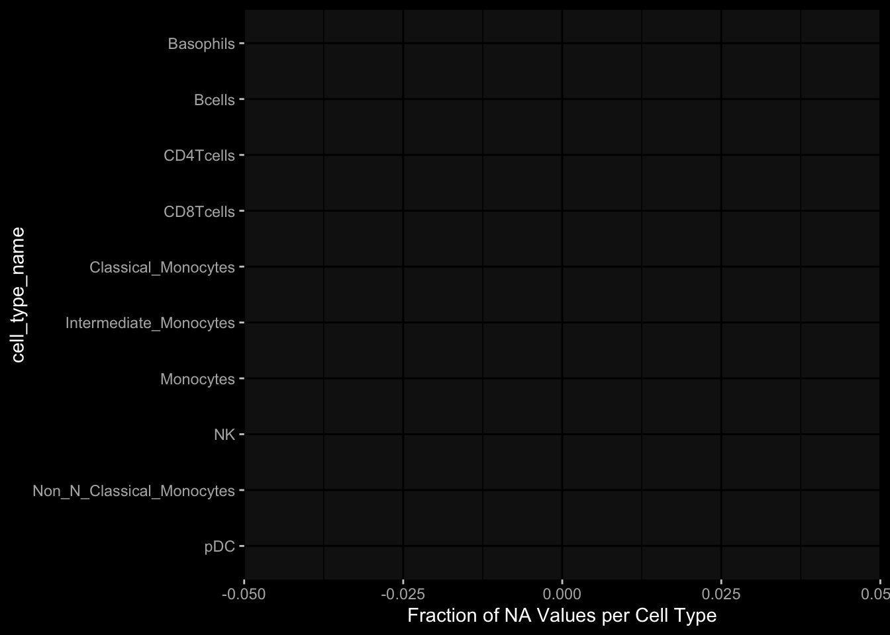
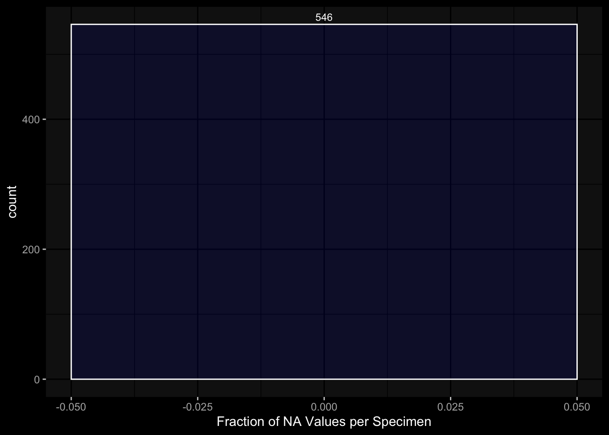
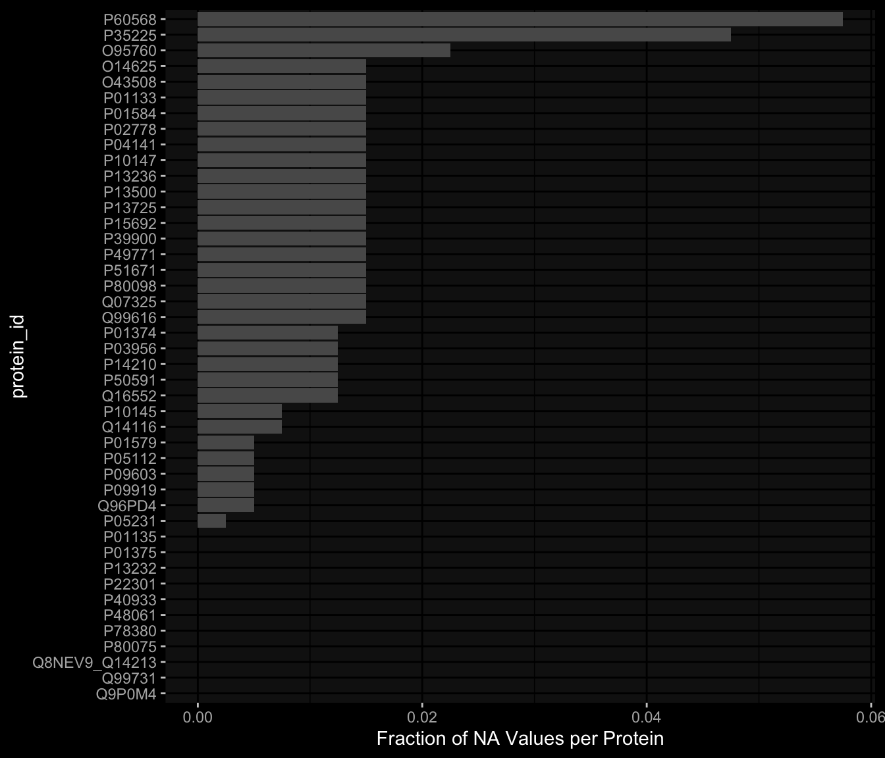

# only works due to filtering step abovestopifnot(all( purrr::map_lgl(exp_data, ~all(.x$specimen_id %in% meta_data$specimen_id))))# no subject is recorded in more than one dataset(meta_data %>% dplyr::count(subject_id, dataset) %>% dplyr::count(subject_id) %>% dplyr::pull(n) ==1) %>%all() %>%stopifnot()# we have the baseline specimen (planned_day_relative_to_boost = 0) for every subject(meta_data %>% dplyr::select(subject_id, planned_day_relative_to_boost, dataset) %>% dplyr::distinct() %>% dplyr::mutate(is_baseline = (planned_day_relative_to_boost==0)) %>% dplyr::group_by(subject_id) %>% dplyr::summarize(baseline_present =any(is_baseline),dataset =first(dataset)) %>% dplyr::group_by(dataset) %>% dplyr::summarize(baseline_present_frac =mean(baseline_present)) %>%pull(baseline_present_frac) ==1) %>%all() %>%stopifnot()stopifnot(all( purrr::map_lgl(exp_data, function(df) {if ("unit"%in%colnames(df)) {return(length(unique(df[["unit"]])) ==1) } else {return(TRUE) } })))
4 Demography & Metadata
4.1 How many subjects do we have per dataset / per partition?
Code
meta_data %>% dplyr::select(subject_id, dataset, partition, infancy_vac) %>% dplyr::distinct() %>% dplyr::count(dataset, partition, infancy_vac) %>%ggplot(aes(x = n, y = dataset, fill = infancy_vac, color = partition)) +geom_col(position =position_dodge(width =0.9), width =0.7, alpha=0.5) +geom_text(aes(label = n), position =position_dodge(width =0.9), hjust =-0.2, vjust =0.5, size =3, color ="white") +scale_fill_manual(values = infancy_vac_colors) +scale_color_manual(values = partition_colors) + ggdark::dark_mode(verbose =FALSE)
t_cell_activation | NA Fraction: 0.0576923076923077 | Removed samples: 681
7.3 What is the fraction of NA values in the PBMC Cell Type Frequencies
With the current selection of cell types, there is no specimen with NA values.
7.3.1 Per Cell Type
Code
exp_data$pbmc_cell_frequency %>% dplyr::mutate(is_na =is.na(percent_live_cell)) %>% dplyr::group_by(cell_type_name) %>% dplyr::summarise(frac_na =sum(is_na) /n()) %>% dplyr::arrange(desc(frac_na)) %>% dplyr::mutate(cell_type_name =factor(cell_type_name, levels=rev(cell_type_name))) %>%ggplot() +geom_col(aes(y=cell_type_name, x=frac_na)) + ggdark::dark_mode(verbose=FALSE) +labs(x="Fraction of NA Values per Cell Type")

7.3.2 Per Cell Specimen
Code
exp_data$pbmc_cell_frequency %>% dplyr::mutate(is_na =is.na(percent_live_cell)) %>% dplyr::group_by(specimen_id) %>% dplyr::summarise(frac_na =sum(is_na) /n()) %>%ggplot(aes(x = frac_na)) +geom_histogram(bins =20, color ="white", fill ="blue", alpha=0.1) +# Add color for better visibilitystat_bin(aes(label =after_stat(count)), bins =20, geom ="text", vjust =-0.5, color ="white", size =3) +# Display bin counts at the top ggdark::dark_mode(verbose=FALSE) +labs(x="Fraction of NA Values per Specimen")

7.4 What is the fraction of NA values in the Olink Data?
7.4.1 Per Protein
After excluding Q969D9, the largest fraction of NA values is about 5% which is acceptable I guess.
Code
exp_data$plasma_cytokine_concentration_by_olink %>% dplyr::mutate(is_na =is.na(concentration)) %>% dplyr::group_by(protein_id) %>% dplyr::summarise(frac_na =sum(is_na) /n()) %>% dplyr::arrange(desc(frac_na)) %>% dplyr::mutate(protein_id =factor(protein_id, levels=rev(protein_id))) %>%ggplot() +geom_col(aes(y=protein_id, x=frac_na)) + ggdark::dark_mode(verbose=FALSE) +labs(x="Fraction of NA Values per Protein")

7.4.2 Per Specimen
There are 6 specimen with more than 50% NA values, I am not sure whether I should exlcude those?
Code
exp_data$plasma_cytokine_concentration_by_olink %>% dplyr::mutate(is_na =is.na(concentration)) %>% dplyr::group_by(specimen_id) %>% dplyr::summarise(frac_na =sum(is_na) /n()) %>%ggplot(aes(x = frac_na)) +geom_histogram(bins =20, color ="white", fill ="blue", alpha=0.1) +# Add color for better visibilitystat_bin(aes(label =after_stat(count)), bins =20, geom ="text", vjust =-0.5, color ="white", size =3) +# Display bin counts at the top ggdark::dark_mode(verbose=FALSE) +labs(x="Fraction of NA Values per Specimen")
8.2 How often is the Cytokine Concentration below the LOD in Olink
Code
# check how often is it below the limit of detection?exp_data$plasma_cytokine_concentration_by_olink %>% dplyr::mutate(below_lod = concentration < lower_limit_of_quantitation) %>% dplyr::count(below_lod)
It seems like the 2023 data are very very different, which makes me hesitant to use it for any kind of predictions on the challenge data. E.g. just looking at level 0 which should make sense I get the following
Code
# first check for NAs for the levelsexp_data$pbmc_cell_frequency %>% dplyr::left_join((meta_data %>% dplyr::select(specimen_id, dataset) %>% dplyr::distinct()),by="specimen_id") %>% dplyr::left_join((celltype_meta %>% dplyr::select(cell_type_name, dataset, level) %>% dplyr::distinct()),by=c("dataset", "cell_type_name")) %>% dplyr::filter(is.na(level))
Especially, when completely ignoring the hierarchy in the gating information, I would expect to have more than 100% in percelt_live_cell_sum, but this is not true for the specimens from the 2023 dataset
# TODO: the assay has been normalized relative to DMSOexp_data$t_cell_polarization %>% dplyr::filter(stimulation=="DMSO") %>% dplyr::pull(analyte_counts) %>% dplyr::near(., 1) %>%mean()
---title: "Data Overview"author: "Philipp Sven Lars Schäfer"date: "`r format(Sys.time(), '%d %B, %Y')`"editor: sourceengine: knitr---# Packages```{r}suppressPackageStartupMessages({library(tidyverse)library(ggdark)library(factoextra)library(FactoMineR)library(magick)library(ComplexHeatmap)library(circlize)source(file.path("..", "src", "read_data.R"))source(file.path("..", "src", "colors.R"))})```# Data```{r}input_dir =file.path("..", "data")``````{r}meta_data <-read_harmonized_meta_data(input_dir)gene_meta <-read_gene_meta(input_dir)#exp_data <- read_harmonized_experimental_data(input_dir)exp_data <-read_raw_experimental_data(input_dir)exp_data <-filter_experimental_data(meta_data, exp_data, gene_meta=gene_meta)celltype_meta <-read_celltype_meta(input_dir)gene_meta <-read_gene_meta(input_dir)protein_meta <-read_protein_meta(input_dir)```# Checks```{r}# only works due to filtering step abovestopifnot(all( purrr::map_lgl(exp_data, ~all(.x$specimen_id %in% meta_data$specimen_id))))# no subject is recorded in more than one dataset(meta_data %>% dplyr::count(subject_id, dataset) %>% dplyr::count(subject_id) %>% dplyr::pull(n) ==1) %>%all() %>%stopifnot()# we have the baseline specimen (planned_day_relative_to_boost = 0) for every subject(meta_data %>% dplyr::select(subject_id, planned_day_relative_to_boost, dataset) %>% dplyr::distinct() %>% dplyr::mutate(is_baseline = (planned_day_relative_to_boost==0)) %>% dplyr::group_by(subject_id) %>% dplyr::summarize(baseline_present =any(is_baseline),dataset =first(dataset)) %>% dplyr::group_by(dataset) %>% dplyr::summarize(baseline_present_frac =mean(baseline_present)) %>%pull(baseline_present_frac) ==1) %>%all() %>%stopifnot()stopifnot(all( purrr::map_lgl(exp_data, function(df) {if ("unit"%in%colnames(df)) {return(length(unique(df[["unit"]])) ==1) } else {return(TRUE) } })))```# Demography & Metadata## How many subjects do we have per dataset / per partition?```{r}meta_data %>% dplyr::select(subject_id, dataset, partition, infancy_vac) %>% dplyr::distinct() %>% dplyr::count(dataset, partition, infancy_vac) %>%ggplot(aes(x = n, y = dataset, fill = infancy_vac, color = partition)) +geom_col(position =position_dodge(width =0.9), width =0.7, alpha=0.5) +geom_text(aes(label = n), position =position_dodge(width =0.9), hjust =-0.2, vjust =0.5, size =3, color ="white") +scale_fill_manual(values = infancy_vac_colors) +scale_color_manual(values = partition_colors) + ggdark::dark_mode(verbose =FALSE)```## What is the age range```{r}meta_data %>%ggplot() +geom_histogram(aes(x=age_at_boost, fill=dataset, y=after_stat(density)), color="black", position="identity", bins=30) +facet_wrap(~dataset) +scale_fill_manual(values=dataset_colors) + ggdark::dark_mode(verbose=FALSE)```# Assays & Timepoints per Subject / Dataset## What is the difference between planned and actual booster administration```{r}meta_data %>%ggplot() +geom_histogram(aes(x=diff_relative_to_boost), binwidth=1) +facet_wrap(~dataset) + ggdark::dark_mode(verbose=FALSE)```## What is the difference between planned and actual for the baseline```{r}meta_data %>% dplyr::filter(planned_day_relative_to_boost==0) %>% dplyr::mutate(`diff_>_15`=abs(actual_day_relative_to_boost) >15) %>%ggplot() +geom_histogram(aes(x=actual_day_relative_to_boost, fill=`diff_>_15`), binwidth=1) +facet_wrap(~dataset) + ggdark::dark_mode(verbose=FALSE)```## How many time points do we have per subject?```{r}meta_data %>% dplyr::count(dataset, subject_id) %>%ggplot() +geom_histogram(aes(x=n, fill=dataset),color="black", binwidth=1) +facet_wrap(~dataset, ncol=2) + ggdark::dark_mode(verbose=FALSE) +scale_x_continuous(breaks=seq(0, 8, 1)) +scale_fill_manual(values=dataset_colors)```## How many assays do we have for the baseline measurement?```{r}assays_per_specimen <- purrr::imap(exp_data, ~ .x %>% dplyr::select(specimen_id) %>% dplyr::distinct() %>% dplyr::mutate(assay=.y)) %>% dplyr::bind_rows() %>% dplyr::left_join(meta_data, by="specimen_id") %>% dplyr::select(specimen_id, assay, subject_id, planned_day_relative_to_boost, infancy_vac, dataset)assays_per_specimen %>% dplyr::count(subject_id, planned_day_relative_to_boost, dataset, specimen_id) %>% dplyr::filter(!is.na(subject_id)) %>% dplyr::filter(planned_day_relative_to_boost==0) %>%ggplot() +geom_histogram(aes(x=n, fill=dataset), color="black", binwidth=1) +facet_wrap(~dataset, ncol=2) + ggdark::dark_mode(verbose=FALSE) +scale_x_continuous(breaks=seq(0, 8, 1)) +scale_fill_manual(values=dataset_colors)``````{r fig.height=6, fig.width=12}for (day in c(0, 1, 3, 14)) {annotation_data <- meta_data %>% dplyr::select(specimen_id, planned_day_relative_to_boost, infancy_vac, dataset, biological_sex) %>% dplyr::filter(specimen_id %in% assays_per_specimen$specimen_id) %>% dplyr::filter(planned_day_relative_to_boost == !!day) %>% dplyr::select(- planned_day_relative_to_boost) %>% dplyr::arrange(dataset, infancy_vac, biological_sex) %>% tibble::column_to_rownames("specimen_id") %>% dplyr::select(dataset, infancy_vac, biological_sex)heatmap_data <- assays_per_specimen %>% dplyr::select(specimen_id, assay) %>% dplyr::mutate(value = 1) %>% tidyr::pivot_wider(names_from="assay", values_from="value") %>% mutate(across(everything(), .fns = ~replace_na(.,0))) %>% tibble::column_to_rownames("specimen_id") %>% as.matrix() %>% t()colnames(heatmap_data) <- as.character(colnames(heatmap_data))heatmap_data <- heatmap_data[, rownames(annotation_data)]# Create the heatmapht <- Heatmap(heatmap_data, name = "heatmap", row_title = "", column_title = paste0("Specimens for Planned Day ", day), col = colorRamp2(c(0, 1), c("white", "black")), cluster_rows = FALSE, cluster_columns = FALSE, show_row_names = TRUE, show_column_names = FALSE, width = unit(16, "cm"), top_annotation = ComplexHeatmap::HeatmapAnnotation(df = annotation_data, col = list( "dataset" = dataset_colors, "infancy_vac" = infancy_vac_colors, "biological_sex" = sex_colors ), which="column"))draw(ht, heatmap_legend_side = "top", annotation_legend_side = "top", show_heatmap_legend = FALSE # don't show colorbar )}``````{r}```# Training Data## How many subjects can we use to construct training data?### 1) Antibody Level Tasks (anti-PT 14 days after booster)- All but 7 people were assayed approximately 14 days after the booster administration```{r}meta_data %>% dplyr::filter(planned_day_relative_to_boost==14) %>%ggplot(aes(x=diff_relative_to_boost)) +geom_histogram(binwidth=1, color ="white", fill ="blue", alpha=0.1) +stat_bin(aes(label =after_stat(count)), binwidth=1, geom ="text", vjust =-0.5, color ="white", size =3) + ggdark::dark_mode(verbose=FALSE)``````{r}meta_data %>% dplyr::select(subject_id, infancy_vac, dataset, biological_sex, ethnicity, race, year_of_birth) %>% dplyr::distinct() %>% dplyr::mutate(task_1_possible = subject_id %in% (meta_data %>% dplyr::filter(planned_day_relative_to_boost==14) %>% dplyr::left_join(exp_data$plasma_ab_titer,by="specimen_id") %>% dplyr::filter(isotype_antigen=="IgG_PT") %>% tidyr::drop_na() %>% dplyr::pull(subject_id)) ) %>% dplyr::group_by(dataset) %>% dplyr::summarise(task_1_possible_total =sum(task_1_possible), task_1_possible_fraction =mean(task_1_possible))```### 2) Cell Frequency Tasks (Monocytes 1 day after booster)- But there is one person where it does not really make sense```{r}meta_data %>% dplyr::filter(planned_day_relative_to_boost==1) %>%ggplot(aes(x=diff_relative_to_boost)) +geom_histogram(binwidth=1, color ="white", fill ="blue", alpha=0.1) +stat_bin(aes(label =after_stat(count)), binwidth=1, geom ="text", vjust =-0.5, color ="white", size =3) + ggdark::dark_mode(verbose=FALSE)``````{r}meta_data %>% dplyr::select(subject_id, infancy_vac, dataset, biological_sex, ethnicity, race, year_of_birth) %>% dplyr::distinct() %>% dplyr::mutate(task_possible = subject_id %in% (meta_data %>% dplyr::filter(planned_day_relative_to_boost==1) %>% dplyr::left_join(exp_data$pbmc_cell_frequency, by="specimen_id") %>% dplyr::filter(cell_type_name=="Monocytes") %>% tidyr::drop_na() %>% dplyr::pull(subject_id)) ) %>% dplyr::group_by(dataset) %>% dplyr::summarise(task_possible_total =sum(task_possible), task_possible_fraction =mean(task_possible))```### 3) Gene Expression Tasks (CCL3 expression 3 days after booster)- There are 7 people for which this task does nto make sense```{r}meta_data %>% dplyr::filter(planned_day_relative_to_boost==3) %>%ggplot(aes(x=diff_relative_to_boost)) +geom_histogram(binwidth=1, color ="white", fill ="blue", alpha=0.1) +stat_bin(aes(label =after_stat(count)), binwidth=1, geom ="text", vjust =-0.5, color ="white", size =3) + ggdark::dark_mode(verbose=FALSE)``````{r}all_genes <-unique(exp_data$pbmc_gene_expression$versioned_ensembl_gene_id)ccl3_ensembl <-"ENSG00000277632"ccl3_ensembl_versioned <- all_genes[str_starts(all_genes, ccl3_ensembl)]meta_data %>% dplyr::select(subject_id, infancy_vac, dataset, biological_sex, ethnicity, race, year_of_birth) %>% dplyr::distinct() %>% dplyr::mutate(task_possible = subject_id %in% (meta_data %>% dplyr::filter(planned_day_relative_to_boost==3) %>% dplyr::left_join(exp_data$pbmc_gene_expression, by="specimen_id") %>% dplyr::filter(versioned_ensembl_gene_id==ccl3_ensembl_versioned) %>% tidyr::drop_na() %>% dplyr::pull(subject_id)) ) %>% dplyr::group_by(dataset) %>% dplyr::summarise(task_possible_total =sum(task_possible), task_possible_fraction =mean(task_possible))```# Missing Data## How many NA values do we have per assay?```{r}purrr::imap(exp_data, function(df, modality) { feature_col <- experimental_data_settings[[modality]]$feature_col value_col <- experimental_data_settings[[modality]]$value_coltibble(modality = modality, feature_col = feature_col, sum_na =sum(is.na(df[[value_col]])))}) %>% dplyr::bind_rows()```## Wide format```{r}purrr::imap_dfr(generate_wide_experimental_data(experimental_data=exp_data, impute=NULL),function(mtx, modality) { rmeans <-rowMeans(is.na(mtx))tibble(modality=modality, subject_id =names(rmeans), na_frac=rmeans) }) %>% dplyr::group_by(modality) %>% dplyr::summarise(mean_na_frac =mean(na_frac))```## What is the fraction of NA values in the PBMC Cell Type FrequenciesWith the current selection of cell types, there is no specimen with NA values.### Per Cell Type```{r}exp_data$pbmc_cell_frequency %>% dplyr::mutate(is_na =is.na(percent_live_cell)) %>% dplyr::group_by(cell_type_name) %>% dplyr::summarise(frac_na =sum(is_na) /n()) %>% dplyr::arrange(desc(frac_na)) %>% dplyr::mutate(cell_type_name =factor(cell_type_name, levels=rev(cell_type_name))) %>%ggplot() +geom_col(aes(y=cell_type_name, x=frac_na)) + ggdark::dark_mode(verbose=FALSE) +labs(x="Fraction of NA Values per Cell Type")```### Per Cell Specimen```{r}exp_data$pbmc_cell_frequency %>% dplyr::mutate(is_na =is.na(percent_live_cell)) %>% dplyr::group_by(specimen_id) %>% dplyr::summarise(frac_na =sum(is_na) /n()) %>%ggplot(aes(x = frac_na)) +geom_histogram(bins =20, color ="white", fill ="blue", alpha=0.1) +# Add color for better visibilitystat_bin(aes(label =after_stat(count)), bins =20, geom ="text", vjust =-0.5, color ="white", size =3) +# Display bin counts at the top ggdark::dark_mode(verbose=FALSE) +labs(x="Fraction of NA Values per Specimen")```## What is the fraction of NA values in the Olink Data?### Per ProteinAfter excluding Q969D9, the largest fraction of NA values is about 5% which is acceptable I guess.```{r fig.height=6}exp_data$plasma_cytokine_concentration_by_olink %>% dplyr::mutate(is_na = is.na(concentration)) %>% dplyr::group_by(protein_id) %>% dplyr::summarise(frac_na = sum(is_na) / n()) %>% dplyr::arrange(desc(frac_na)) %>% dplyr::mutate(protein_id = factor(protein_id, levels=rev(protein_id))) %>% ggplot() + geom_col(aes(y=protein_id, x=frac_na)) + ggdark::dark_mode(verbose=FALSE) + labs(x="Fraction of NA Values per Protein")```### Per SpecimenThere are 6 specimen with more than 50% NA values, I am not sure whether I should exlcude those?```{r}exp_data$plasma_cytokine_concentration_by_olink %>% dplyr::mutate(is_na =is.na(concentration)) %>% dplyr::group_by(specimen_id) %>% dplyr::summarise(frac_na =sum(is_na) /n()) %>%ggplot(aes(x = frac_na)) +geom_histogram(bins =20, color ="white", fill ="blue", alpha=0.1) +# Add color for better visibilitystat_bin(aes(label =after_stat(count)), bins =20, geom ="text", vjust =-0.5, color ="white", size =3) +# Display bin counts at the top ggdark::dark_mode(verbose=FALSE) +labs(x="Fraction of NA Values per Specimen")``````{r}exp_data$plasma_cytokine_concentration_by_olink %>% dplyr::mutate(is_na =is.na(concentration)) %>% dplyr::group_by(specimen_id) %>% dplyr::summarise(frac_na =sum(is_na) /n()) %>% dplyr::filter(frac_na >0.2) %>% dplyr::left_join(meta_data, by="specimen_id") %>% dplyr::select(specimen_id, frac_na, subject_id, dataset, actual_day_relative_to_boost, planned_day_relative_to_boost)```# Question for Assay Metadata## How does the quality control for Olink look like?```{r}exp_data$plasma_cytokine_concentration_by_olink %>% dplyr::count(quality_control)``````{r}exp_data$plasma_cytokine_concentration_by_olink %>% dplyr::left_join(meta_data, by="specimen_id") %>% dplyr::count(partition, dataset)exp_data$plasma_cytokine_concentration_by_legendplex %>% dplyr::left_join(meta_data, by="specimen_id") %>% dplyr::count(partition, dataset)```## How often is the Cytokine Concentration below the LOD in Olink```{r}# check how often is it below the limit of detection?exp_data$plasma_cytokine_concentration_by_olink %>% dplyr::mutate(below_lod = concentration < lower_limit_of_quantitation) %>% dplyr::count(below_lod)``````{r fig.width=10, fig.height=4}set.seed(1)p1 <- exp_data$plasma_cytokine_concentration_by_olink %>% dplyr::mutate(below_lod = concentration < lower_limit_of_quantitation) %>% dplyr::mutate(qc_warning = quality_control == "Warning") %>% dplyr::group_by(protein_id) %>% dplyr::summarize(mean_below_lod = mean(below_lod, na.rm=TRUE), mean_qc_warning = mean(qc_warning, na.rm=TRUE)) %>% dplyr::left_join(cytokine_uniprot_mapping, by="protein_id") %>% ggplot() + geom_point(aes(x = mean_below_lod, y = mean_qc_warning)) + ggrepel::geom_text_repel(aes(x = mean_below_lod, y = mean_qc_warning, label = ifelse(mean_below_lod > 0.2, protein_id, '')), max.overlaps = Inf, color="grey") + # This ensures all labels are shown ggdark::dark_mode()p2 <- exp_data$plasma_cytokine_concentration_by_olink %>% dplyr::mutate(below_lod = concentration < lower_limit_of_quantitation) %>% dplyr::mutate(qc_warning = quality_control == "Warning") %>% dplyr::group_by(protein_id) %>% dplyr::summarize(mean_below_lod = mean(below_lod, na.rm=TRUE), mean_qc_warning = mean(qc_warning, na.rm=TRUE)) %>% dplyr::left_join(cytokine_uniprot_mapping, by="protein_id") %>% ggplot() + geom_point(aes(x = mean_below_lod, y = mean_qc_warning)) + ggrepel::geom_text_repel(aes(x = mean_below_lod, y = mean_qc_warning, label = ifelse(mean_below_lod > 0.2, cytokine, '')), max.overlaps = Inf, color="grey") + # This ensures all labels are shown ggdark::dark_mode()cowplot::plot_grid(p1, p2, ncol=2)``````{r}```## What is the fraction of unspecific antibody measurements### Per Isotype-Antigen```{r}exp_data$plasma_ab_titer %>% dplyr::group_by(isotype_antigen) %>% dplyr::summarize(is_antigen_specific_fraction =mean(is_antigen_specific)) %>%ggplot(aes(x=is_antigen_specific_fraction)) +geom_histogram(bins=30, color ="white", fill ="blue", alpha=0.1) +stat_bin(aes(label =after_stat(count)), bins=30, geom ="text", vjust =-0.5, color ="white", size =3) + ggdark::dark_mode(verbose=FALSE)```### Per SpecimenSo in some specimen we have non-specific antibody measurements? What does that mean?```{r}exp_data$plasma_ab_titer %>% dplyr::group_by(specimen_id) %>% dplyr::summarize(is_antigen_specific_fraction =mean(is_antigen_specific)) %>%ggplot(aes(x=is_antigen_specific_fraction)) +geom_histogram(binwidth=1, color ="white", fill ="blue", alpha=0.1) +stat_bin(aes(label =after_stat(count)), binwidth=1, geom ="text", vjust =-0.5, color ="white", size =3) + ggdark::dark_mode(verbose=FALSE)```# Hierarchy in PBMC Frequency Data## NKThere are 3 types of NK cells:- NK cells (CD3-CD19-CD56+): CD19-CD3-CD56+/++- NK: CD19-CD3-CD56+- CD56high NK cells: CD19-CD3-CD56++And I don't know what to do with that information!## No Gating Info for 2023- I just assume it is the same as in 2022, but this might not be true since the data look so different## No Gating Info for Basophils and CD19 in 2020- I just assume it is the same as in 2021 and 2022## No Gating Info for non-pDCs at all Not sure how to fix this)```{r}exp_data$pbmc_cell_frequency %>% dplyr::left_join((meta_data %>% dplyr::select(specimen_id, dataset) %>% dplyr::distinct()),by="specimen_id") %>% dplyr::left_join((celltype_meta %>% dplyr::select(cell_type_name, dataset, level) %>% dplyr::distinct()),by=c("dataset", "cell_type_name")) %>% dplyr::filter(is.na(level)) %>% dplyr::select(dataset, cell_type_name) %>% dplyr::distinct()```## Should the Proportions sum up to 1 at level 0?- Trying to take the hierarchical information into account, it still does not make sense```{r}exp_data$pbmc_cell_frequency %>% dplyr::left_join((meta_data %>% dplyr::select(specimen_id, dataset) %>% dplyr::distinct()),by="specimen_id") %>% dplyr::left_join((celltype_meta %>% dplyr::select(cell_type_name, dataset, level) %>% dplyr::distinct()),by=c("dataset", "cell_type_name")) %>% dplyr::filter(level ==0) %>% dplyr::group_by(specimen_id) %>% dplyr::summarize(percent_live_cell_sum =sum(percent_live_cell, na.rm=TRUE)) %>% dplyr::left_join(meta_data, by="specimen_id") %>%ggplot() +geom_violin(aes(x=dataset, y=percent_live_cell_sum)) + ggdark::dark_mode(verbose=FALSE)```## Difference in 2023 Dataset- It seems like the 2023 data are very very different, which makes me hesitant to use it for any kind of predictions on the challenge data. E.g. just looking at level 0 which should make sense I get the following```{r}# first check for NAs for the levelsexp_data$pbmc_cell_frequency %>% dplyr::left_join((meta_data %>% dplyr::select(specimen_id, dataset) %>% dplyr::distinct()),by="specimen_id") %>% dplyr::left_join((celltype_meta %>% dplyr::select(cell_type_name, dataset, level) %>% dplyr::distinct()),by=c("dataset", "cell_type_name")) %>% dplyr::filter(is.na(level))``````{r}exp_data$pbmc_cell_frequency %>% dplyr::left_join((meta_data %>% dplyr::select(specimen_id, dataset) %>% dplyr::distinct()),by="specimen_id") %>% dplyr::left_join((celltype_meta %>% dplyr::select(cell_type_name, dataset, level) %>% dplyr::distinct()),by=c("dataset", "cell_type_name")) %>% dplyr::filter(level ==0) %>% dplyr::group_by(specimen_id) %>% dplyr::summarize(percent_live_cell_sum =sum(percent_live_cell, na.rm=TRUE)) %>% dplyr::left_join(meta_data, by="specimen_id") %>%ggplot() +geom_violin(aes(x=dataset, y=percent_live_cell_sum)) + ggdark::dark_mode(verbose=FALSE)```- Especially, when completely ignoring the hierarchy in the gating information, I would expect to have more than 100% in `percelt_live_cell_sum`, but this is not true for the specimens from the 2023 dataset```{r}exp_data$pbmc_cell_frequency %>% dplyr::left_join((meta_data %>% dplyr::select(specimen_id, dataset) %>% dplyr::distinct()),by="specimen_id") %>% dplyr::left_join((celltype_meta %>% dplyr::select(cell_type_name, dataset, level) %>% dplyr::distinct()),by=c("dataset", "cell_type_name")) %>% dplyr::group_by(specimen_id) %>% dplyr::summarize(percent_live_cell_sum =sum(percent_live_cell, na.rm=TRUE)) %>% dplyr::left_join(meta_data, by="specimen_id") %>%ggplot() +geom_violin(aes(x=dataset, y=percent_live_cell_sum)) + ggdark::dark_mode(verbose=FALSE)```- Or what I use a list of predefined cell types of interest?# Features for T cell Activation Assay (AIM)```{r}exp_data$t_cell_activation %>% dplyr::select(stimulation) %>% dplyr::distinct()``````{r}exp_data$t_cell_activation %>%ggplot() +geom_histogram(aes(x=analyte_percentages), bins=100) +facet_wrap(~stimulation) + ggdark::dark_mode()```# Features for T cell Polarization Assay (FluoroSpot)```{r}exp_data$t_cell_polarization %>% dplyr::left_join(protein_meta, by=c("protein_id"="uniprot_id")) %>% dplyr::select(protein_id, cytokine) %>% dplyr::distinct()``````{r}exp_data$t_cell_polarization %>% dplyr::select(stimulation) %>% dplyr::distinct()```where- DMSO: "Negative" Control (solvent where peptides are dissolved in)- PHA (Phytohaemagglutinin): "Postive" Control (this should elicit strong T cell response?)- PT: Bordetella Pertussis Toxin```{r}exp_data$t_cell_polarization %>% dplyr::left_join(protein_meta, by=c("protein_id"="uniprot_id")) %>%ggplot() +geom_histogram(aes(x=analyte_counts), bins=100) +facet_grid(rows=vars(stimulation), cols=vars(cytokine)) +scale_x_log10() + ggdark::dark_mode()# TODO: the assay has been normalized relative to DMSOexp_data$t_cell_polarization %>% dplyr::filter(stimulation=="DMSO") %>% dplyr::pull(analyte_counts) %>% dplyr::near(., 1) %>%mean()exp_data$t_cell_polarization %>% dplyr::filter(stimulation!="DMSO") %>% dplyr::pull(stimulation_protein_id) %>%unique()```# Other Notes- Only from 2022 onwards do we have time-course baseline measurements, i.e. `-30, -14/15, 0````{r}meta_data %>% dplyr::count(partition, dataset, planned_day_relative_to_boost) %>% dplyr::filter(planned_day_relative_to_boost <0)```# Appendix<button class="accordion-button" type="button" data-bs-toggle="collapse" data-bs-target="#collapseOne" >Session Information</button><div id="collapseOne" class="accordion-collapse collapse"><div>```{r}sessionInfo()```</div></div>